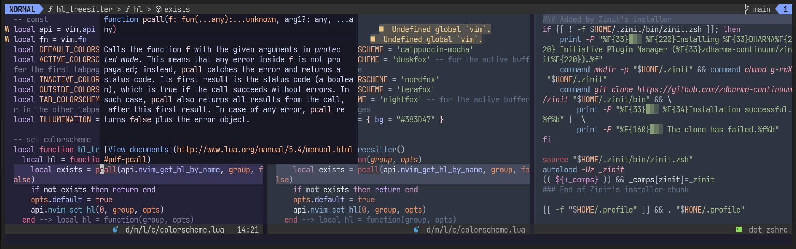

本記事の改訂版が出ています
先日はstyler.nvimを使ってバッファが作業ディレクトリに属すか否かで適用するカラースキームを変えました。
今回はウィンドウがアクティブか否かで適用するカラースキームを変えてみます。

似た用途でtint.nvimを使うと、非アクティブなウィンドウのコントラストを抑えられます。しかし、styler.nvimと干渉するのと、コントラストを落としたせいで視認性に乏しくなるおそれがあります。
styler.nvimだけ使えば干渉の心配はなくなりますし、人気なカラースキームを使えば低コントラストでも十分な視認性が期待できます。
特にnightfox.nvimが提供する高コントラストなduskfoxと低コントラストなnordfoxは文字の色合いが似ていることもあり、相性がよく、今回試してみました。また、styler.nvimはウィンドウローカルなカラースキームを実現するもので、cmdlineやウィンドウ境界はターゲットとしていません。こういったその他の部分やfloatwinにはcatppuccinを採用してみました。
--[[
# Change colorschemes by active/inactive windows
This is a simplified version, and may cause performance issue if so many windows are open.
## Requirements:
- nvim >= 0.8
- plugins
- folke/styler.nvim
- catppuccin/nvim
- EdenEast/nightfox.nvim
]]
-- settings
-- ACTIVE_COLORSCHEME and INACTIVE_COLORSCHEME must be colorschemes using `nvim_set_hl`
BASE_COLORSCHEME = 'catppuccin-mocha'
ACTIVE_COLORSCHEME = 'duskfox'
INACTIVE_COLORSCHEME = 'nordfox'
-- Apply colorscheme
vim.cmd("colorscheme " .. BASE_COLORSCHEME)
-- Create autocmd to apply styler.nvim on active/inactive windows
nvim.api.nvim_create_autocmd(
{ 'WinEnter', 'BufEnter' },
{
group = nvim.api.nvim_create_augroup('theme-custom', {}),
callback = function(_)
local set_theme = require('styler').set_theme
local win = nvim.api.nvim_get_current_win()
-- use default colorscheme instead of applying styler.nvim on floatwin
-- because some UIs are composed of multiple windows and they should share the theme
if api.nvim_win_get_config(win).relative ~= "" then return end
-- apply styler.nvim on active window
set_theme(win, { colorscheme = ACTIVE_COLORSCHEME })
-- apply styler.nvim on inactive windows
for _, w in pairs(api.nvim_tabpage_list_wins(0)) do
if w ~= win then set_theme(w, { colorscheme = INACTIVE_COLORSCHEME }) end
end
end
}
)ENJOY!!